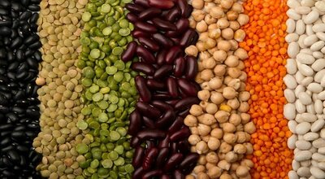
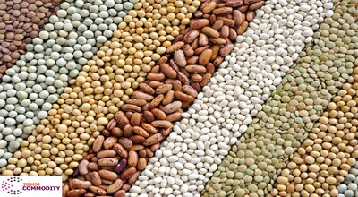
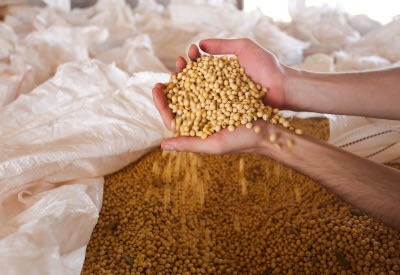

-  Tecnologia que ‘reorganiza’ átomos em lavouras pode acelerar secagem de grãos Effatha Agro usa frequências emitidas por satélites para ajustar partículas de nutrientes do solo ou acelerar a evaporação da água
-  Tecnologia e agro: inteligencia artificial revoluciona a venda e compra de grãos no Brasil
-  O modal rodoviário é um parceiro de grande importância para o agronegócio.